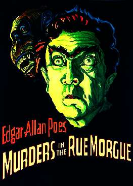

Борис Акунин
Мой календарь
Больше всего мы любим праздники, имеющие к нам непосредственное, личное отношение. Я такие выискиваю специально. Сегодня один из них.
20 апреля 1841 года в литературе появился новый жанр: когда кого-то убили, и непонятно кто, читатели ломают голову, а писатель водит их за нос - правду знает, но скоро не скажет. Одним словом, родился детектив.
Главный редактор филадельфийского журнала Graham’s Magazin, некий мистер По, опубликовал новеллу собственного сочинения. Она называлась «Убийство на улице Морг». Гениальный сыщик Огюст Дюпен расследовал чудовищное злодеяние, и разгадка всех совершенно поразила.
В двадцатом и двадцать первом веках детективные произведения неизменно лидируют в списках бестселлеров. Возникает вопрос - почему? Чем это так уж привлекательно читать жуткие истории про то, как кто-то кого-то криминально прикончил? Вон открой газету или загляни в интернет - там этого добра хоть залейся.
А штука в том, что вымышленное преступление ненастоящее. На самом деле никто из животных (в болгарском смысле слова «живот»: «жизнь») не пострадал. Жертв убивают понарошку. Это такой литературный Хэллоуин, когда тебя пугают, а не страшно. Наоборот - интересно.
Детектив даже лучше, чем ужастик, потому что загадка заставляет человека шевелить мозгами, а этот процесс производит в голове приятную щекотку. У меня есть гипотеза, что человек, читающий детективы, в среднем умнее того, кто их не читает. Во всяком случае живее умом.
Сегодня отмечаем день приятных неприятностей, нестрашных злодейств и увлекательных драм.